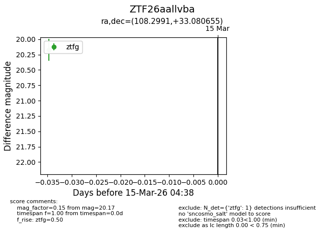
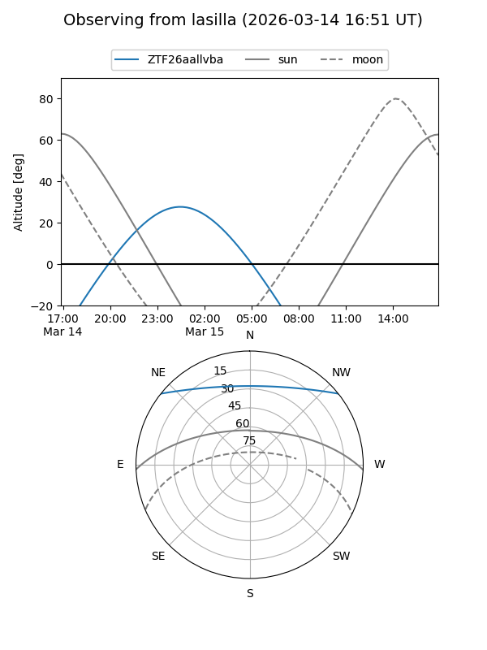
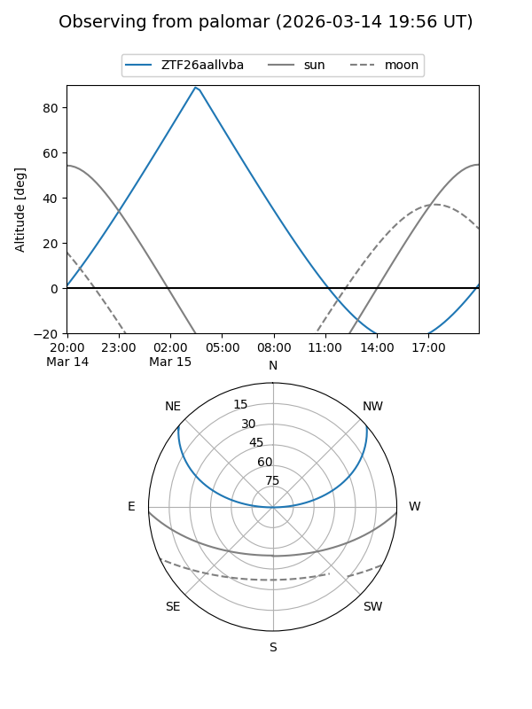

ZTF26aallvba
Target ZTF26aallvba at 2026-03-15 04:40
Aliases and brokers:
FINK: link
Lasair: link
ALeRCE: link
alt names
ZTF26aallvba (ztf,fink_ztf)
Coordinates:
equatorial (ra, dec) = 108.2991,+33.08066
equatorial (HMS+DMS) = 07:13:11.78,+33:04:50.36
galactic (l, b) = (184.6095,+18.63733)
Flags:
Photometry:
last ztfg=20.17
1 ztfg detections
Lightcurve

Visibility


Additional plots